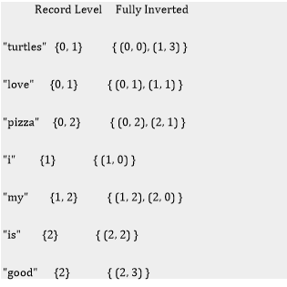

C++, Data Structure and Algorithms
In this project, I tried to depict the algorithms used by browsers and ms word to find a word in a large text input data. The input data we are using is a novel named “the kite runner” by Khaled Hosseini. There are many types of algorithms and data structures used for this purpose only. We are depicting an inverted index data structure, boyer Moore search algorithm, and Rabin-Karp search algorithm.
Things I implemented for this project -
1) SEARCH USING INVERTED INDEX DATA STRUCTURE AND LINKED LISTS
2) BOYER MOORE SEARCH ALGORITHM
3) RABIN-KARP SEARCH ALGORITHM
An Inverted Index is a structure used by search engines and databases to make search terms to files or documents, trading the speed writing the document to the index for searching the index later on. There are two versions of an inverted index, a record-level index which tells you which documents contain the term and a fully inverted index which tells you both the document a term is contained in and where in the file it is.
Boyer Moore Algorithm
The main idea of Boyer-Moore in order to improve the performance are some observations of the pattern. In the terminology of this algorithm they are called good-suffix and badcharacter shifts.
Input: Text with n characters and Pattern with m characters
Output: Index of the first substring of T matching P
Time Complexity
Complexity is O(n). The execution time can actually be sub-linear: it doesn't need to actually check every character of the string to be searched but rather skips over some of them (check right-most character of the block of m first, if not found in pattern can skip entire rest of block).
Best-case performance is O(n/m). In the best case, only one in m characters needs to be checked.
Worst case complexity is O(m+n)
Rabin–Karp algorithm
Rabin–Karp algorithm seeks to speed up the testing of equality of the pattern to the substrings in the text by using a hash function. A hash function is a function which converts every string into a numeric value, called its hash value.
The key to the Rabin–Karp algorithm's performance is the efficient computation of hash values of the successive substrings of the text. The Rabin fingerprint is a popular and effective rolling hash function. The Rabin fingerprint treats every substring as a number in some base, the base being usually a large prime. For example, if the substring is "hi" and the base is 101, the hash value would be 104 × 1011 + 105 × 1010 = 10609 (ASCII of 'h' is 104 and of 'i' is 105).
The essential benefit achieved by using a rolling hash such as the Rabin fingerprint is that it is possible to compute the hash value of the next substring from the previous one by doing only a constant number of operations, independent of the substrings' lengths.
Time Complexity
The running time of the Rabin-Karp algorithm in the worst-case scenario is O((n-m+1)m) but it has a good average-case running time.
If the expected number of valid shifts is small O(1) and the prime q is chosen to be quite large, then the Rabin-Karp algorithm can be expected to run in time O(n+m) plus the time to required to process spurious hits.